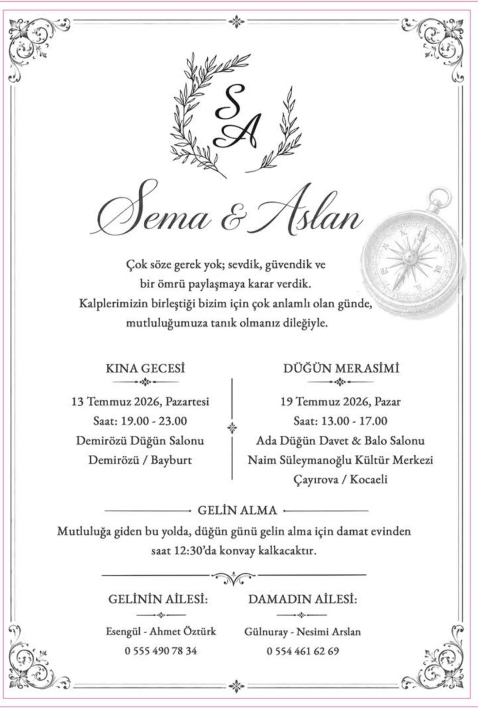

Zaman: 13 Temmuz 2026, Pazartesi 19:00 - 23:00
Adres: Demirözü Belediyesi Düğün Salonu Demirözü/Bayburt
Konvoy hareket zamanı: 12:30
Zaman: 19 Temmuz 2026, Pazar 13:00 - 17:00
Adres: Ada Düğün Davet & Balo Salonu Naim Süleymanoğlu Kültür Merkezi Çayırova/Kocaeli
